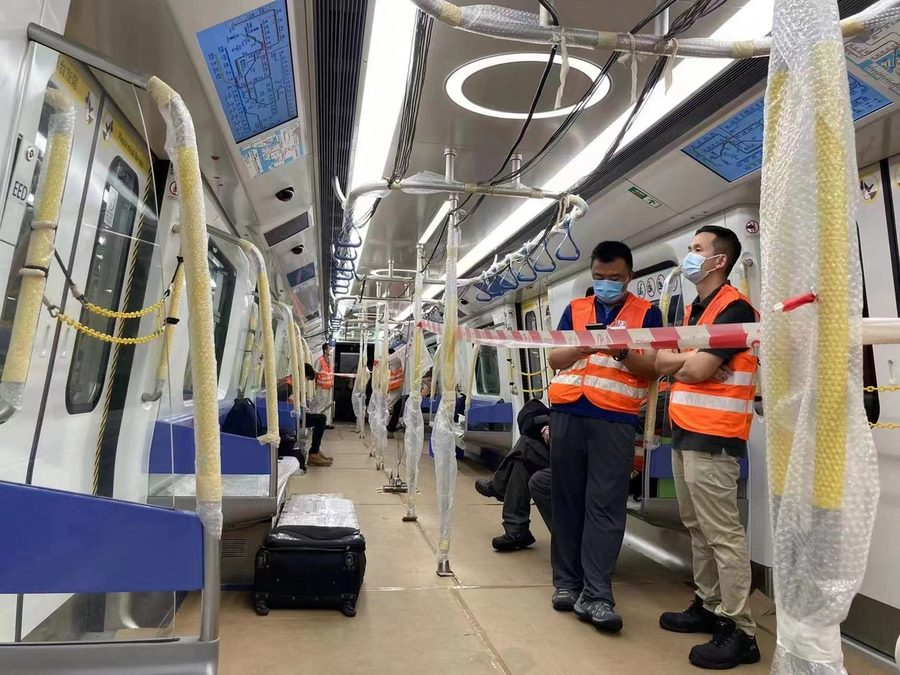
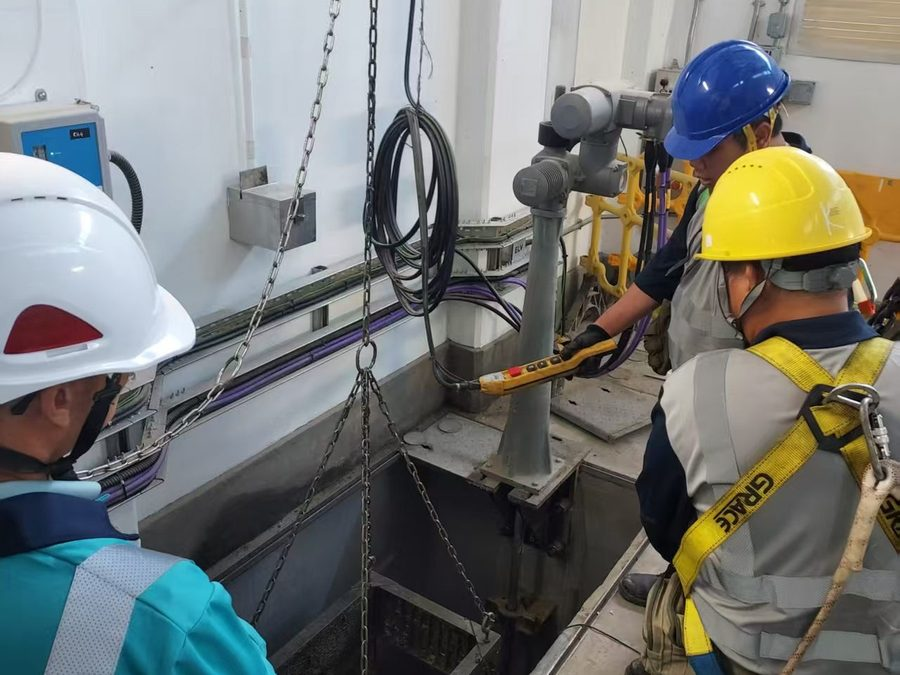

網站搬遷通知：全新網站正式啓用！若瀏覽遇到問題，請嘗試清除瀏覽器快取。
四合一即時氣體偵測，具備高分貝防爆聲光報警功能。
暗處全彩夜視，即時回傳密閉空間內部影像。
強效穿透力，確保地下深處訊號穩定不中斷。
極速 1 秒響應，專為局限空間作業前檢測設計。

為鐵路、公共交通及相關基建工程提供項目所需物料及產品支援，協助項目團隊處理規格、供應及交付安排。

配合密閉空間(或稱受限空間)下的設備操作、現場安全要求及工程支援安排。
提供技術資料、測試及實際使用協助；提供產品尋源及進出口安排、設計項目制供應鏈支援。